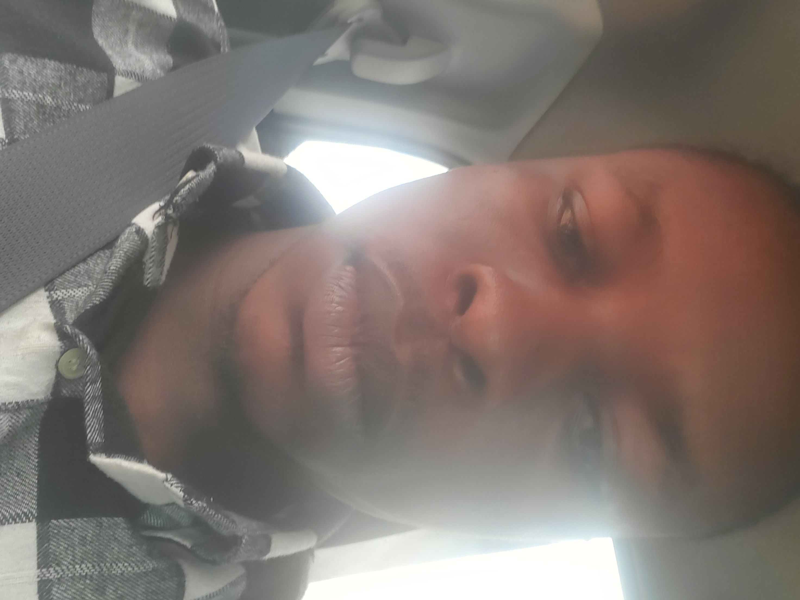

About Me
Hi, my name is Samuel Madu I'm a Creative / Full Stack Developer from the Nigeria. Over the years I developed a skill set in a range of technologies and frameworks, including Laravel, VueJS and Tailwind. Where I really value clean and readable code. Also I'm very passionate about UX / UI. And last but not least, I enjoy playing sports and I'm a little bit of a geek now and then.
ALT SCHOOL ID
My Alt School Id is ALT/SOE/024/0318

Biography
I'm Samuel Madu, born on 26th July, 2001. I love playing video games and really staying on my own
Reason why i join Altschool
ALTSCHOOL Software engineering school offer valuable training and connections to launch or advance your tech career.
- Tailored Curriculum: AltSchool Africa's program is crafted to equip students with the key skills and knowledge required in the job market. The emphasis on front-end engineering is perfectly aligned with my aspiration to become a skilled front-end developer.
- Practical Skill Development: AltSchool Africa prioritizes hands-on learning and real-world applications. This approach ensures that I am not just absorbing theoretical concepts, but also gaining practical experience with the tools and technologies used in the industry.
- Career Readiness: The program equips students for the job market by incorporating projects, assignments, and assessments that reflect real-world challenges. This practical experience is invaluable, bridging the gap between education and employment.
- Guidance from Experts: Learning from seasoned instructors and industry professionals is a major benefit. Their expertise and insights help me stay updated on current industry trends and best practices, which are vital for my professional growth.
- Professional Networking: Being part of AltSchool Africa enables me to connect with like-minded peers and professionals in the tech community. These connections are crucial for career advancement and opportunities.
- Flexible Learning Options: As an online platform, AltSchool Africa offers the flexibility I need to balance learning with other responsibilities. This accessibility allows me to continue developing my skills no matter where I am.
School of Engineering Goals
- Build a strong foundation in software development
- Master in-demand programming skills
- Develop problem-solving and analytical skills
- Build a professional network